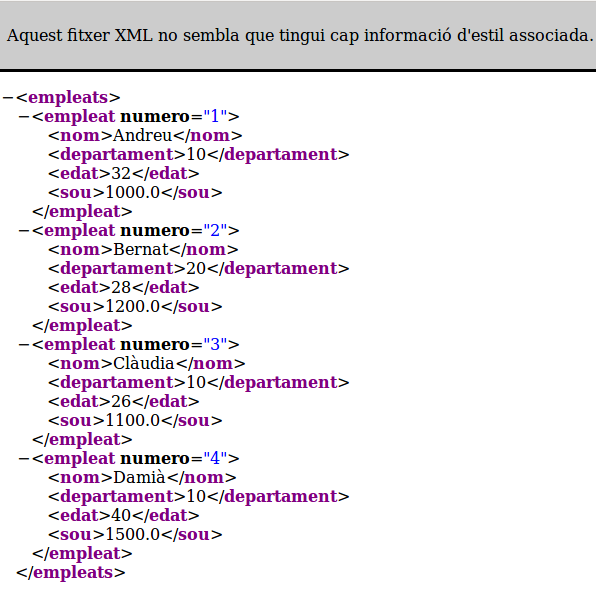

4.2.2 Escriptura
Anem ara a crear un nou document XML i a guardar-lo en un fitxer. Utilitzarem com a exemple Empleats. Al final de tot convertirem el fitxer Empleats.obj, generat en la pregunta 3, en el fitxer Empleats.xml.
La primera consideració a fer és que partirem d'un document buit. Anirem construint els elements i posant els atributs, i quan tinguem un element creat del tot, l'afegirem a l'estructura, és a dir farem que siga el fill d'un que ja està en l'estructura. Podríem fer-ho també al revés, és a dir, primer penjar-lo de l'estructura i després anar omplint-lo.
Els principals mètodes per anar construint l'estructura són:
Mètodes de DOCUMENT
| Valor tornat | Mètode | Descripció |
| Element | createElement(String nom) | crea un nou element amb el nom indicat (s'haurà de penjar en l'estructura) |
| Text | createTextNode(String dades) | crea un nou element de text (amb contingut) |
| Node | appendChild(Node nou) | afegeix el node nou, que serà l'arrel |
Mètodes de NODE
| Valor tornat | Mètode | Descripció |
| Node | appendChild(Node nou) | afegeix el node nou com a l'últim fill fins el moment |
| void | removeChild(Node vell) | lleva el node vell com a fill |
Mètodes de ELEMENT
| Valor tornat | Mètode | Descripció |
| void | setAttribute(String nom,String valor) | afegeix un nou atribut a l'element, amb el nom i valor indicats |
| void | removeAttribute(String nom) | lleva l'atribut de l'element |
Anem a fer directament ja l'exemple dels empleats. Totes les dades seran elements, excepte el número d'empleat, que farem que siga un atribut d'empleat per a practicar. A l'element arrel li direm empleats. El resultat ha de ser el fitxer Empleats.xml.
En el fitxer XML generat, observareu que no hi ha retorns de carro, tot està en una mateixa línia. Si voleu veure'l bé, el podeu obrir per exemple amb un navegador web, que interpreta bé el format XML.
| <?xml version="1.0" encoding="UTF-8" standalone="no"?><empleats><empleat numero="1"><nom>Andreu</nom><departament>10</departament><edat>32</edat><sou>1000.0</sou></empleat><empleat numero="2"><nom>Bernat</nom><departament>20</departament><edat>28</edat><sou>1200.0</sou></empleat><empleat numero="3"><nom>Clàudia</nom><departament>10</departament><edat>26</edat><sou>1100.0</sou></empleat><empleat numero="4"><nom>Damià</nom><departament>10</departament><edat>40</edat><sou>1500.0</sou></empleat></empleats> |  |
Llicenciat sota la Llicència Creative Commons Reconeixement NoComercial CompartirIgual 2.5